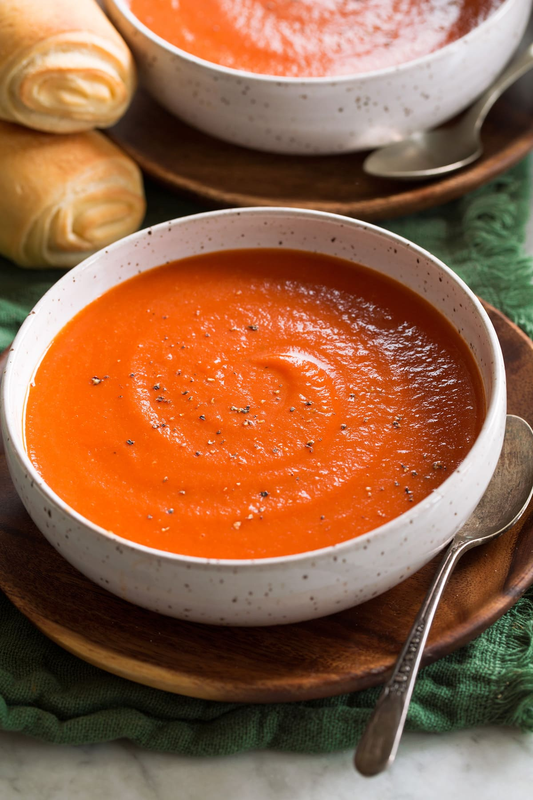

Tomato soup

This tomato soup recipe makes a rich, smooth, comforting soup that's quick to make !
This homemade tomato soup recipe has the power to automatically transport you back to your childhood. It is the ultimate comfort food.
Ingredients
Steps
- Gather all ingredients
- Cut the garlic and onions in small chunks
- Cut the tomatoes in small pieces
- Boil everything for about 20 minutes
- Mix everything in a blender
- Enjoy your Tomato soup
Home